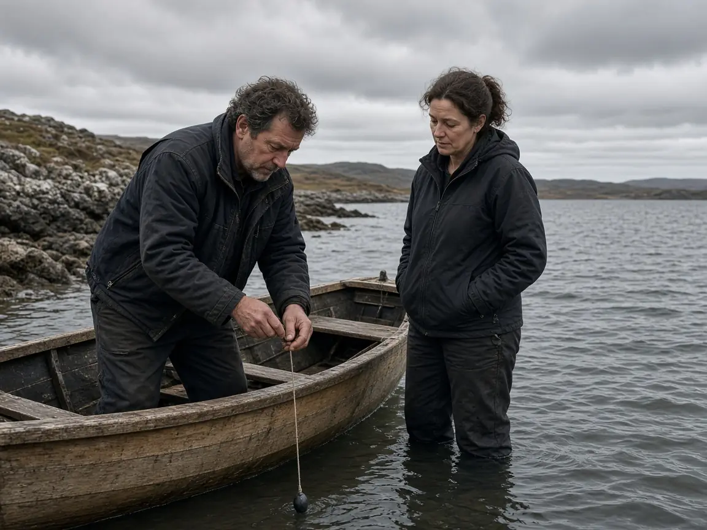
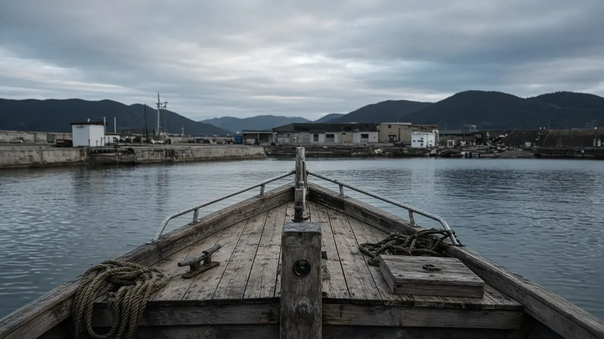
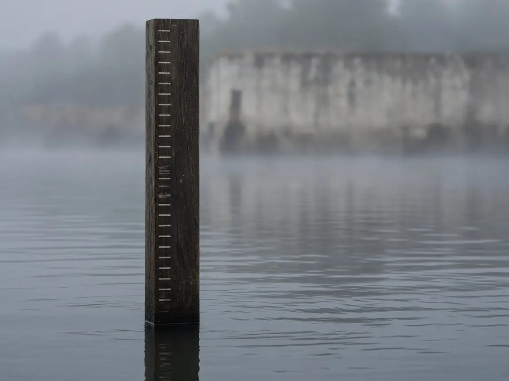

沿岸の測量
凪浦港の岸壁から、鳥渡岬の外側までを、日中に測ります。使うのは測量船「白磯」と「二白磯」、それに小舟「片葉」です。深さは錘と、音の跳ね返りを併用し、同じ線を往復して数字を合わせます。

凪浦市。1974年設立。
潮罫社は、凪浦湾とその周辺の水深、潮流、岸の形を測り、海図にします。船を出す人、港を直す人、潮の記録を残したい人が、同じ図面を見られるようにするためです。

01
測ること、図にすること、記録を残すこと、同じ紙を一緒に見ること。潮罫社の仕事はこの四つです。
凪浦港の岸壁から、鳥渡岬の外側までを、日中に測ります。使うのは測量船「白磯」と「二白磯」、それに小舟「片葉」です。深さは錘と、音の跳ね返りを併用し、同じ線を往復して数字を合わせます。

測った数字を、図番「潮-」の海図にします。岸の線、港の名前、水深、航路の目安を一枚に収めます。刊行は紙です。画面用のデータの販売はしていません。
凪浦港の検潮所で、朝と夕方に潮位を読み、社内の台帳へ残します。年に一度、冊子にして、港を使う船主の集まりへ一部を置きます。

港の工事の前に、頼んだ人、船主、当社の三者が同じ海図を見ます。浅い場所、杭の位置、船が回る範囲を、その場で指さして確認します。メモは当社が取り、翌週までに郵送します。
02
下の図は潮-27、凪浦湾です。航海には使えません。実在の海図の複製ではありません。
潮-12
鳥渡岬付近
縮尺 1:15,000。2025年11月改版。
潮-27
凪浦湾
縮尺 1:25,000。2026年3月改版。
潮-41
片葉島水道
縮尺 1:10,000。2026年9月改版。
潮-44
潮見漁港
縮尺 1:8,000。2024年6月改版。
この目録の4図以外に、社内では14図を刊行中です。
03
図面を扱う二人です。
沿岸測量。白磯の甲板で、測深の縄を持つ係です。
海図編集。測深の数字を、図の上の位置へ落とす係です。
04
凪浦の船主6人が、各自の下書きを一冊にするために潮罫社を始めました。
測量船「白磯」が進水しました。
手書きの潮位帳を、年1回の冊子に切り替えました。
図番を「潮-」に揃えました。
潮-41 片葉島水道を改版し、航路の目安を引き直しました。
05
夏季測量の説明を、凪浦港の倉庫で行いました。参加者は船主12人でした。
潮汐台帳の2025年分を製本し、社内の棚に加えました。
06
2027年春の採用です。応募は郵送だけです。
履歴書と職務経歴書を、連絡先まで郵送してください。封筒に「測量スタッフ応募」または「編集応募」と書いてください。
07
測量で部屋を空ける日は、扉に戻り時間を掲示します。手紙は届かず、電話はつながりません。